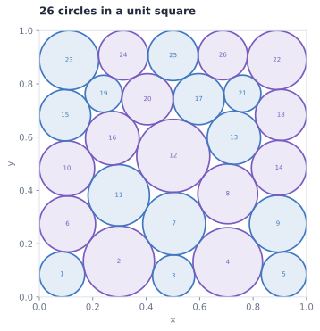

- Previous best
- 2.635983
- EvoDuet
- 2.635983
- Objective
- Sum of radii ↑
- Run cost
- $36.33


Source
Python
# EVOLVE-BLOCK-START
"""Numerically optimized variable-radius packing of 26 circles."""
import numpy as np
from scipy.optimize import minimize, linprog
def _make_start(seed):
"""Build varied five- or six-row center layouts for LP/SLP polishing."""
rng = np.random.default_rng(seed)
patterns = (
(4, 4, 5, 4, 5, 4),
(5, 4, 4, 5, 4, 4),
(4, 5, 4, 5, 4, 4),
(4, 5, 5, 4, 4, 4),
(5, 4, 5, 4, 4, 4),
(4, 4, 4, 5, 4, 5),
(4, 5, 4, 4, 5, 4),
(5, 4, 4, 4, 5, 4),
(4, 4, 5, 5, 4, 4),
(5, 4, 5, 4, 4, 4),
(4, 5, 4, 4, 4, 5),
(5, 4, 4, 4, 4, 5),
)
counts = patterns[seed % len(patterns)]
rows = len(counts)
heights = np.ones(rows) / rows
heights += rng.normal(0.0, 0.012, rows)
heights = np.maximum(heights, 0.13)
heights /= np.sum(heights)
levels = np.cumsum(np.r_[0.0, heights[:-1]])
p = []
for row, count in enumerate(counts):
y = levels[row] + 0.5 * heights[row]
xs = (np.arange(count) + 0.5) / count
phase = rng.uniform(-0.055, 0.055)
xs = xs + phase + rng.normal(0.0, 0.004, count)
p.extend((x, y) for x in xs)
p = np.asarray(p[:26], dtype=float)
p += rng.normal(0.0, 0.004, p.shape)
p = np.clip(p, 0.055, 0.945)
return np.column_stack((p, np.full(26, 0.043)))
def _constraints(z):
"""Return wall-clearance and pairwise non-overlap inequalities."""
q = z.reshape(26, 3)
x, y, r = q.T
out = [x - r, y - r, 1.0 - x - r, 1.0 - y - r]
for i in range(25):
d = q[i + 1:, :2] - q[i, :2]
out.append(np.sum(d * d, axis=1) - (r[i] + r[i + 1:]) ** 2)
return np.concatenate(out)
def _repair(q):
"""Shrink radii uniformly until every wall and pair constraint is strict."""
q = np.asarray(q, dtype=float).copy()
q[:, :2] = np.clip(q[:, :2], 1e-5, 1.0 - 1e-5)
q[:, 2] = np.maximum(q[:, 2], 0.0)
q[:, 2] = np.minimum(q[:, 2],
np.minimum.reduce((q[:, 0], q[:, 1],
1.0 - q[:, 0], 1.0 - q[:, 1])))
factor = 1.0
for i in range(25):
d = np.sqrt(np.sum((q[i + 1:, :2] - q[i, :2]) ** 2, axis=1))
s = q[i, 2] + q[i + 1:, 2]
mask = s > 0
if np.any(mask):
factor = min(factor, float(np.min(d[mask] / s[mask])))
# Keep only a tiny numerical safety margin; the previous 0.05% shrink
# discarded a measurable amount of objective value on every polish.
q[:, 2] *= max(0.0, min(1.0, factor * 0.999999))
return q
def construct_circles():
"""Use feasible LP radii followed by inner linearized center/radius polishing."""
n = 26
best = None
best_value = -1.0
# Preserve distinct feasible active sets: the LP ranking is not always
# the same as the ranking after exact nonlinear optimization.
elite = []
def polish(q):
"""Maximize radii through monotone LP steps with bounded center moves."""
q = np.asarray(q, dtype=float).copy()
x, y = q[:, 0], q[:, 1]
# First maximize the radii exactly for the fixed starting centers.
ar = []
br = []
for i in range(n):
row = np.zeros(n)
row[i] = 1.0
ar.append(row)
br.append(min(x[i], y[i], 1.0 - x[i], 1.0 - y[i]))
for i in range(n - 1):
for j in range(i + 1, n):
row = np.zeros(n)
row[i] = row[j] = 1.0
ar.append(row)
br.append(np.hypot(x[i] - x[j], y[i] - y[j]))
lp = linprog(
np.full(n, -1.0),
A_ub=np.asarray(ar),
b_ub=np.asarray(br),
bounds=[(0.0, 0.5)] * n,
method="highs",
)
if not lp.success:
return _repair(q)
q[:, 2] = lp.x
# Each LP below is an inner approximation: its solution remains
# feasible for the nonlinear distance constraints.
for trust in (0.028, 0.018, 0.010, 0.005, 0.002):
for _ in range(18):
x, y, r = q.T
nv = 3 * n
aa = []
bb = []
for i in range(n):
row = np.zeros(nv)
row[3 * i] = -1.0
row[3 * i + 2] = 1.0
aa.append(row)
bb.append(x[i] - r[i])
row = np.zeros(nv)
row[3 * i + 1] = -1.0
row[3 * i + 2] = 1.0
aa.append(row)
bb.append(y[i] - r[i])
row = np.zeros(nv)
row[3 * i] = 1.0
row[3 * i + 2] = 1.0
aa.append(row)
bb.append(1.0 - x[i] - r[i])
row = np.zeros(nv)
row[3 * i + 1] = 1.0
row[3 * i + 2] = 1.0
aa.append(row)
bb.append(1.0 - y[i] - r[i])
for i in range(n - 1):
for j in range(i + 1, n):
dx = x[i] - x[j]
dy = y[i] - y[j]
d = np.hypot(dx, dy)
if d < 1e-10:
continue
ux, uy = dx / d, dy / d
row = np.zeros(nv)
row[3 * i] = -ux
row[3 * i + 1] = -uy
row[3 * j] = ux
row[3 * j + 1] = uy
row[3 * i + 2] = row[3 * j + 2] = 1.0
aa.append(row)
bb.append(d - r[i] - r[j])
bounds = []
for i in range(n):
bounds.extend([
(-trust, trust), (-trust, trust), (-r[i], 0.12)
])
step = linprog(
np.array([0.0, 0.0, -1.0] * n),
A_ub=np.asarray(aa),
b_ub=np.asarray(bb),
bounds=bounds,
method="highs",
)
if not step.success or np.max(np.abs(step.x)) < 1e-9:
break
q += step.x.reshape(n, 3)
return _repair(q)
for seed in range(120):
q = polish(_make_start(seed))
value = float(np.sum(q[:, 2]))
if np.all(_constraints(q) >= -2e-8):
elite.append((value, q.copy()))
if value > best_value:
best, best_value = q, value
# Keep a broad but bounded set of candidates for later exact polishing.
elite.sort(key=lambda item: item[0], reverse=True)
elite = elite[:24]
def nonlinear_polish(q):
"""Refine a feasible packing with SLSQP on exact nonlinear constraints."""
q = np.asarray(q, dtype=float).copy()
nvar = 3 * n
def objective(z):
return -float(np.sum(z[2::3]))
def objective_jac(z):
g = np.zeros(nvar)
g[2::3] = -1.0
return g
result = minimize(
objective,
q.ravel(),
jac=objective_jac,
method="SLSQP",
bounds=[(0.0, 1.0), (0.0, 1.0), (0.0, 0.2)] * n,
constraints={"type": "ineq", "fun": _constraints},
options={
"ftol": 2e-11,
"maxiter": 500,
"disp": False,
},
)
if result.success or np.all(_constraints(result.x) >= -2e-8):
candidate = result.x.reshape(n, 3)
if np.all(_constraints(candidate) >= -2e-8):
return candidate
return q
if best is None:
best = _repair(_make_start(0))
# Exact SLSQP polishing can change the contact graph and therefore can
# reorder candidates that looked similar under the LP inner model.
# Polish several geometrically distinct layouts before basin hopping.
refined_count = 0
seen = []
for _, candidate in elite:
signature = np.round(candidate[:, :2], 5)
if any(np.max(np.abs(signature - old)) < 1e-10 for old in seen):
continue
seen.append(signature)
refined = nonlinear_polish(candidate)
if (
np.all(_constraints(refined) >= -2e-8)
and np.sum(refined[:, 2]) > best_value + 1e-11
):
best = refined
best_value = float(np.sum(refined[:, 2]))
refined_count += 1
if refined_count >= 12:
break
# Explore nearby basins using coherent affine deformations. Moving all
# centers together is substantially safer than independently jittering
# circles in a jammed packing, and the subsequent LP/SLP polish restores
# feasible radii while optimizing the deformed layout.
rng = np.random.default_rng(918273)
incumbent = best.copy()
incumbent_value = float(np.sum(incumbent[:, 2]))
walker = incumbent.copy()
walker_value = incumbent_value
# Use threshold acceptance rather than strict hill climbing. This lets
# the center deformation cross shallow local-optimum barriers, while the
# separate incumbent remains strictly monotone.
for trial in range(140):
# Occasionally restart the walk from a different elite contact graph
# instead of repeatedly perturbing one basin.
if trial % 19 == 0 and len(elite) > 1:
idx = int(rng.integers(0, min(12, len(elite))))
q = elite[idx][1].copy()
else:
q = walker.copy()
c = q[:, :2] - 0.5
angle = rng.normal(0.0, 0.040)
ca, sa = np.cos(angle), np.sin(angle)
sx = rng.uniform(0.93, 1.09)
sy = rng.uniform(0.93, 1.09)
shear = rng.normal(0.0, 0.055)
transform = np.array([
[sx * ca, -sy * sa + shear],
[sx * sa, sy * ca],
])
q[:, :2] = 0.5 + c @ transform.T
# Apply small coherent row waves to alter the active contact graph
# while retaining the useful six-row arrangement.
if trial % 3 == 1:
rows = np.clip(np.floor(q[:, 1] * 6.0).astype(int), 0, 5)
phase = rng.uniform(0.0, 2.0 * np.pi)
wave = rng.normal(0.0, 0.0055, 6)
q[:, 1] += wave[rows]
q[:, 0] += 0.0035 * np.sin(1.6 * rows + phase)
# Alternate collective and weak individual perturbations so that the
# walk can both change row geometry and break repeated contacts.
if trial % 2 == 0:
q[:, :2] += rng.normal(0.0, 0.0038, (n, 2))
if trial % 7 == 6:
q[:, :2] += rng.normal(0.0, 0.0018, (n, 2))
q = polish(_repair(q))
if not np.all(_constraints(q) >= -2e-8):
continue
value = float(np.sum(q[:, 2]))
elite.append((value, q.copy()))
if len(elite) > 32:
elite.sort(key=lambda item: item[0], reverse=True)
elite = elite[:24]
# Geometrically cool the acceptance band, then restart it. The
# threshold is deliberately small relative to the incumbent margin.
phase = trial % 14
temperature = 0.00055 * (0.18 ** (phase / 13.0))
if value >= walker_value - temperature:
walker, walker_value = q, value
if value > incumbent_value:
incumbent, incumbent_value = q, value
best, best_value = q, value
# Prevent a sequence of accepted downhill moves from abandoning the
# best basin family altogether.
if walker_value < incumbent_value - 0.003:
walker = incumbent.copy()
walker_value = incumbent_value
# The LP iterations use tangent half-spaces, so they can stop at a
# nonsmooth active-set point. SLSQP can jointly adjust centers and
# radii across the exact circular constraints.
refined = nonlinear_polish(best)
if (
np.all(_constraints(refined) >= -2e-8)
and np.sum(refined[:, 2]) > np.sum(best[:, 2])
):
best = refined
return best
# EVOLVE-BLOCK-END
# This part remains fixed (not evolved)
def run_code():
"""Run the circle packing constructor for n=26"""
circles = construct_circles()
sum_radii = float(np.sum(circles[:, 2]))
return circles, sum_radii
Requires the original benchmark harness and dependencies.
Score history 100 iterations
Score history
Best-so-far search-time score ↑
Search-time scores; the final native objective is reported above.
Run details
A variable-radius packing optimized with linearized steps, local exploration, and nonlinear polishing.
Circle coordinates are a fresh replay of the archived source. Boundary and pairwise non-overlap constraints were checked.
Recorded score: 2.6359830849184607 · reference: 2.6359830849210715 · seed: 42.
Replay sum of radii: 2.635983084918. Positive radii, square boundaries, and pairwise non-overlap verified for all 26 circles.
Program ID: f88acdcb-13db-49ab-8e7f-b8f48c31ef2e
Source SHA-256: fbb63f8de368e82f63089f865b3d9769db5eb44970613c5d396bf86c5335a251
History SHA-256: f9f4fe28f0ea5ae0a0273f74d5a987a8a4794eea806496c4707e2fbf95393478